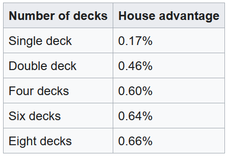
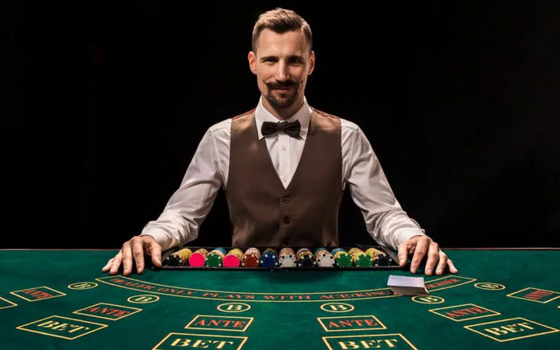
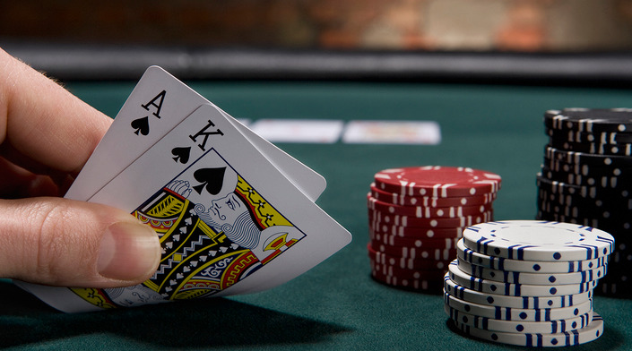
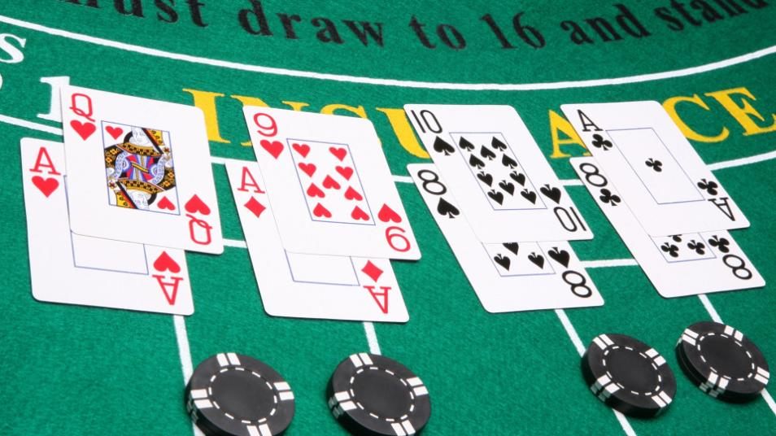

In Blackjack, all players play against the dealer. There are no competition between the players.
Blackjack is commonly played with a table that seats 2-7 players.
Dealer will have a shuffled deck of cards, which will comprise of one to eight, standard 52-card deck.
Blackjack is popularly played with 4+ decks at casinos to secure the house advantage.
Most common number of decks is 4,6,8.

How to Play
Setting up
Blackjack is played in rounds and players bet before the beginning of each round.
At the start of every round, each player receives one card facing up.
Typically, dealer distributes cards from own left to right.
Once every player has one card facing up, the dealer places own card near the center facing up.
Next, the dealer distributes to players their second cards, also facing up.
These 2 cards are called the player's original hand.
After players have their original hands, the dealer places own second card facing down, hiding the value from the players.
It is common to have the second card underneath the dealer's first card.
The order of having player's hand being completed before the dealer's will be important in settling bets.

Evaluation
Now, the players will have a brief moment to assess their original hand.
If the original hand adds to the value of 21, then this is called Blackjack or "natural".
Blackjack is a term reserved only for the original hand (2-card hand) and it even trumps a playing hand that may result in 21 with 3 or more cards.
Hitting a blackjack immediately ends the round for the player, who has to now wait for the dealer's play and bet settlement.
Most likely, players won't have blackjack in their original hand.
From here, players look to create a playing hand that amounts to 21 or higher than the dealer's hand without exceeding 21.
Playing hand can be broadly categorized as hard hand vs. soft hand.
Hard hand is a playing hand with only distinct values, meaning no Aces in the hand. As long as the hand is without Aces, it is a hard hand.
Soft hand is a playing hand that involves Aces. Because Ace can be either 11 or 1 in value, its presence introduces flexibility to the gameplay.

Player Decisions
From their original hand, players have several playing decisions available to construct their playing hand.
Hit: Player can ask for another card onto the current playing hand. For visual audit at casinos, players either tap or scratch the table.
Stand: Player can decide to keep the current hand. For visual audit at casinos, players wave a hand over their cards.
Double-down: Player can double the current bet amount and ask for only one additional card to onto the original playing hand.
This move is only allowed with the original hand, meaning it won't be an option when the player have 3 or more cards in their playing hand.
Logically therefore, doubling down would be performed if the player is feeling certain that the value of 21 can be reached with just one more card onto the original hand.
The last card added is placed sideways to indicate the playing hand is closed and that no more playing decisions can be made for the round.
Split: If the playing hand consists of a pair of same values, player can choose to split the current value into two equal halves.
Typically, the playing hand can be split up to 4 times and if the house rule allows, split cards can be doubled down.
Surrender: Player can choose to forfeit the right to play for the round by surrendering half of the current bet to the dealer.
This move is only allowed with the original hand.
Player keeps the other half of the bet, which can end up being a benefitting play for the player under certain situations.
Surrendering is not recognized as a rule in most casinos because it doesn't necessarily favor the house.
Players can make decisions as long as their playing hand doesn't exceed the value of 21.
Players must stand on 21 and conclude their play for the round.
If players exceed 21, it is called a bust and players will lose their bets in the settling phase.
If player gets a bust, then the player loses the bet without exception.
This is because the game makes the players go ahead of the dealer. So even though the dealer can bust as well, the player with a bust loses first, counted as a player's loss by design.

Dealer's Turn
Once after all the players have their finalized playing hand, the dealer's hand is revealed and played out.
Dealer doesn't have options to double, split or surrender.
Dealer's hand is played out based around two values - 21 and 17.
21 should be self-explanatory by now, as it is the magic number that determines winning or busting.
17 is a benchmark that allows a hand to be called "made hand", which is from 17 to 21 in value.
Dealer's hand is resolved by drawing until the hand achieves a total of 17 or higher.
Now, the rule for resolving dealer's hand at 17 is crucial to Blackjack's gameplay.
Originally, Blackjack was developed with a rule that required dealers to stand on all 17s, both in hard and soft 17s. This is commonly abbreviated as S17 (Stand on 17).
For example, dealer's original hand of Ace and 6 had to stand. Also, dealer's playing hand of 7,8,2 had to stand.
Later, casinos started implementing a rule that allowed dealers to hit on soft 17s, abbreviated as H17 (Hit on 17). This rule opened possibilities to the house of obtaining higher made cards against the players.
For example, the dealer's original hand of 6 and Ace will now be hit for a chance to obtain the result of 18,19,20 and 21. Similarly, dealer's playing hand of 7,7,2,A will be hit under the same rule.
Statistically, this rule favors the house by 0.2%.
Settling bets
If player hit a blackjack and the dealer didn't get a blackjack, the payout is made with a ratio of 3 to 2.
This means player will receive 1.5x the bet amount while also retaining the bet amount.
For example, if blackjack was obtained with a $10 bet, then the player receives $15 dollars from the dealer as a winning on top of reclaming the $10 bet.
If players bust, they lose their bet amount.
If the dealer busts, players with surviving hands will be paid equal to the bet amount.
If the dealer does not bust, players with higher hand will be paid equal to the bet amount.
If hands are tied, then it is called "push" or "stand-off" and bets are returned without adjustment.
After settlements, the played cards are collected in a separate tray. As the original deck of cards starts to run low, the played cards are shuffled back into the deck.